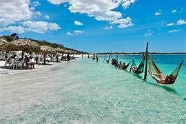

Descobrindo as praias do Nordeste
Data da publicação:
O Nordeste do Brasil é um dos destinos turísticos mais procurados do país, conhecido por suas praias paradisíacas, águas cristalinas e clima quente durante praticamente todo o ano.
Entre os destinos mais visitados estão Jericoacoara no Ceará, Porto de Galinhas em Pernambuco, Maragogi em Alagoas e Praia do Forte na Bahia.
